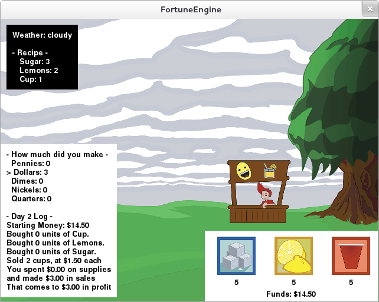
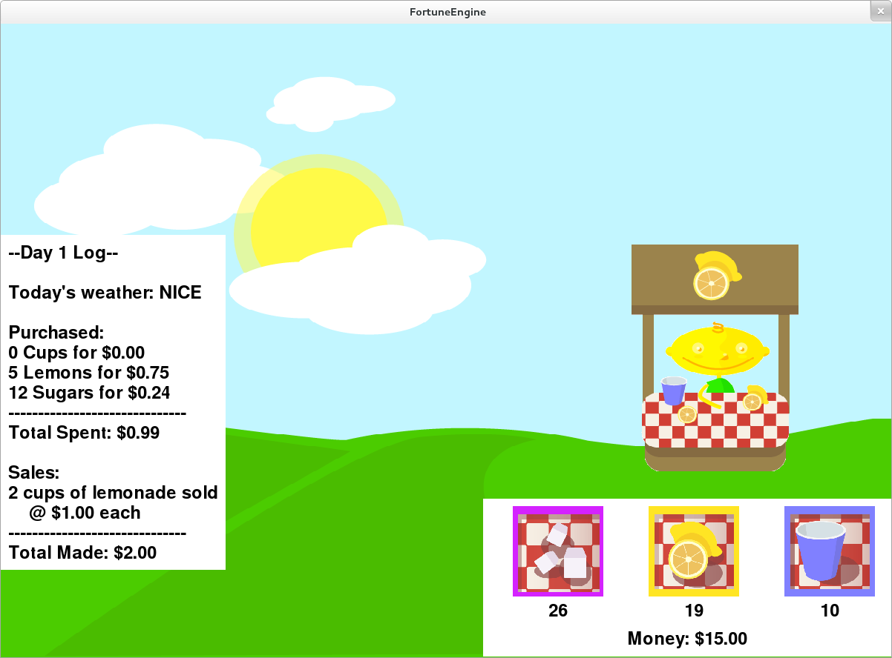
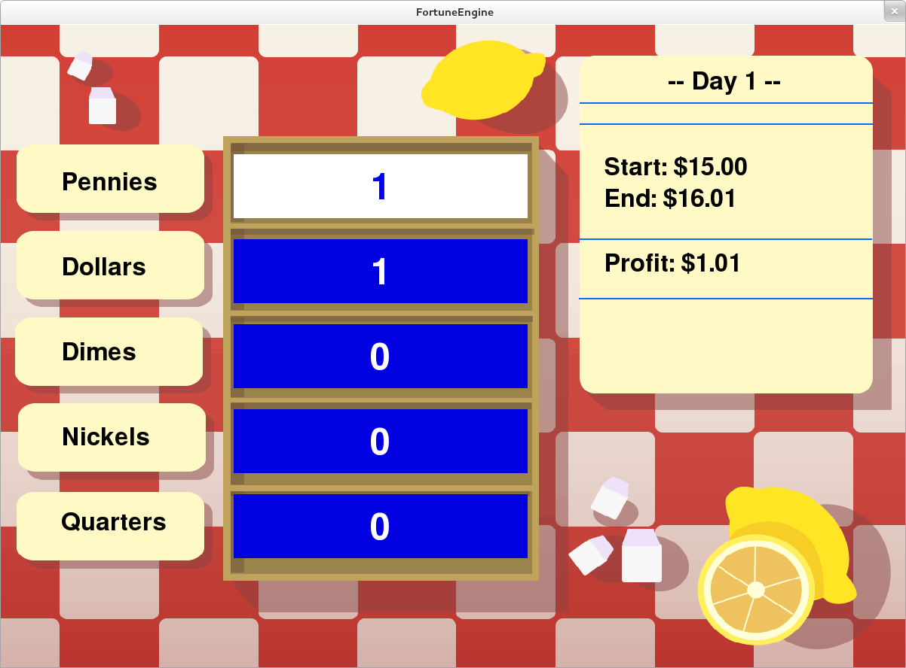
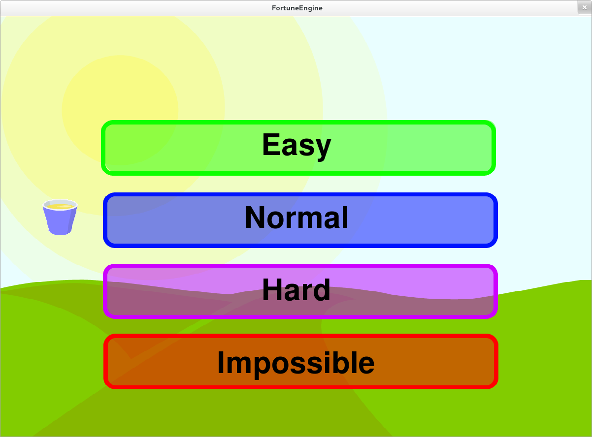
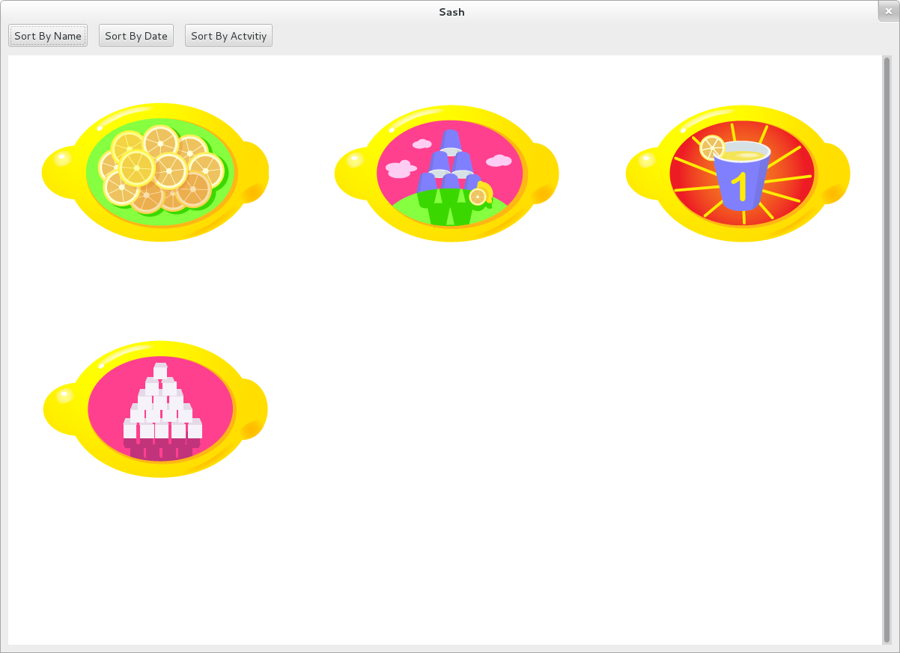
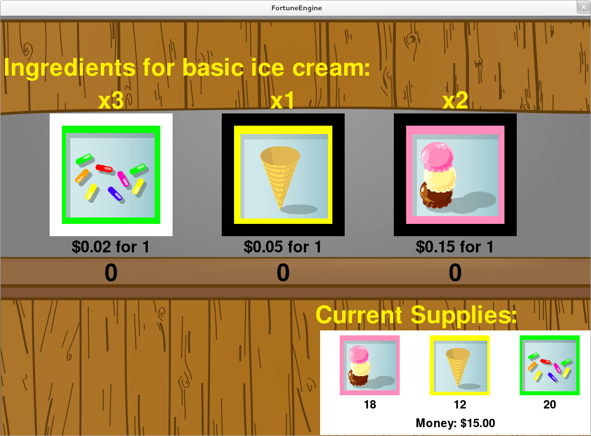
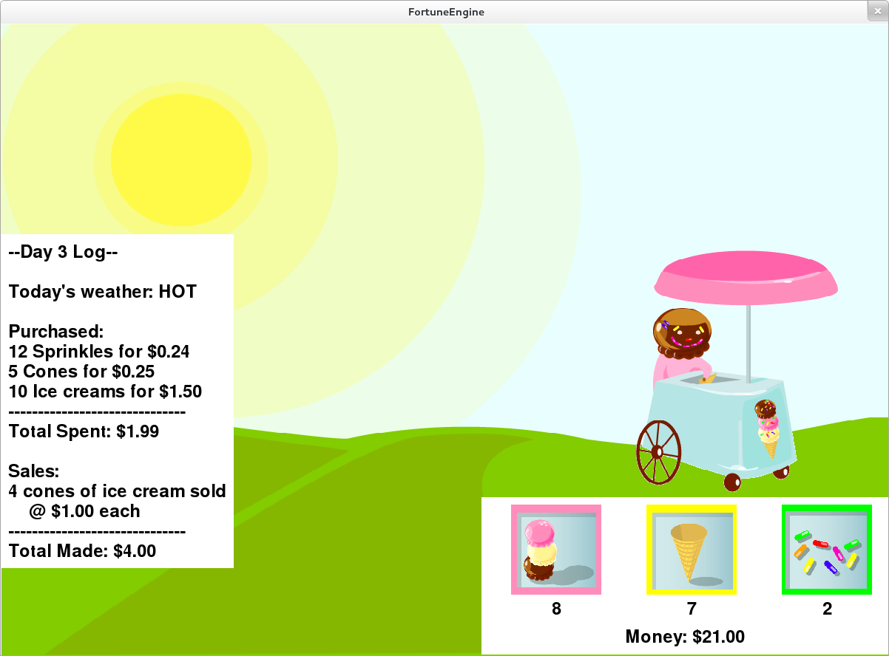

A New UI
- Old interface was too clunky
- Poor readability and usability


New Selections
- Language selection
- Menu screen
- Difficulty selection

Sash
- Activity for displaying the user's badges
- Reads datastore object for badge information
- Generates a badge from information received from DS object
- Displays badge(s) onto the window
- Tooltips provide useful information about the badges

How does Sash work?
- Activities that award badges use a badges library
- Badges lib creates a DS object with a specific property: has_badges
- Sash finds any DS object that has property 'has_badges: True'
- Sash checks if that activity has awarded the user any badges
- If so, Sash reads a symbolic link of the badge images that the badges lib created
- Badges are then displayed in Sash with tooltip information such as the name, criteria, data acquired, etc.
Customization
- Don't like running a lemonade stand but wish you could make your own? ok, that's a thing.
- Ability to create other types of stands. ex: Ice Cream Stand!
- Users are able to load in their own sets of images to generate that new stand

Localization
- Created a Spanish translation for the game
- Able to efficently generate any translation and get it working on the XO
- Other project SkyTime has English, Spanish, and French.
- Used gettext for translations
How to get translations to work
- $python setup.py genpot
- Generates a po/ directory with a <bundle_name>.pot file (rename to <bundle_name.po)
- Edit the .po file and add your translations
- $python setup.py dist_xo
- Generates the locale/ directory where it stores the new .mo file
- Add these next two lines of code at the beginning of the program
- import gettext
- lang = gettext.translation(<bundle_id>, 'locale/', languages=[<name_of_mo_file>])
- _ = lang.ugettext
- Every word you want translated, change it to _(<string>)
| Space | Forward |
|---|
| Left, Down, Page Down | Next slide |
|---|
| Right, Up, Page Up | Previous slide |
|---|
| P | Open presenter console |
|---|
| H | Toggle this help |
|---|